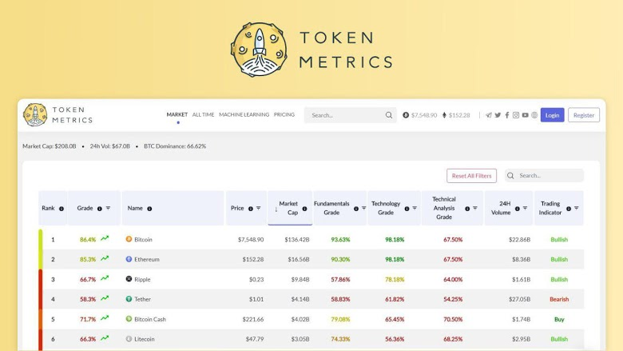
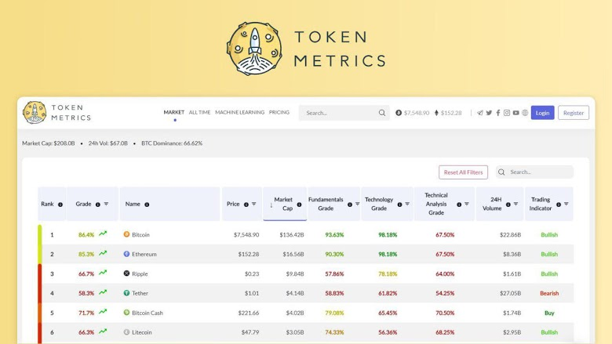
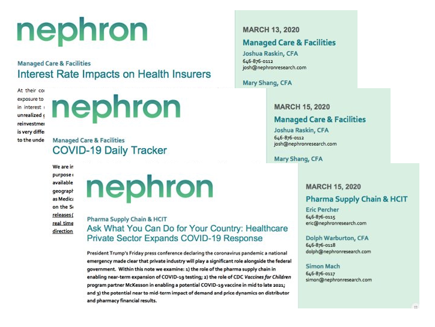

I'm a final year french graduate student in Operations Research at Columbia University, currently pursuing a career in the data science field.
I have been spending the past 3 years actively delivering data-driven solutions for the various companies I have worked for, accross multiple industries including Healthcare, Finance, and Music.
I'm also an Artist, Songwriter and Producer with more than 10 millions streams on Spotify.
You will find a selection of projects I have worked on here. Feel free to connect on Linkedin!
 

I work at Token Metrics as a Data Scientist/Machine Learning Engineer. I initiated the sentiment department, which studies the opinion towards cryptocurrencies to help investment research.

Through Columbia University, I had the opportunity to help Nephron Research leverage large drug pricing data sets to better understand drug price patterns and to provide powerful preditive tools to investors.
I led a 5 gratuate students team to help Morgan Stanley Analytics team derive insights out of Twitter, using NLP and Machine Learning techniques.
In the context of my Machine Learning education, I developped a Recommender System for Yelp customers using various models, from Collaborative Filtering to AutoEncoder Neural Networks

In the context of my Machine Learning education, I developped a Spam Classifier to help user finally getting rid of annoying emails!
As a music passionate, I write and produce songs with artists all around the world. Using my data skills, I have crafted marketing strategies which generated more than 10 millions streams on Spotify and made one of my songs reach the Top Charts in Philipinnes.